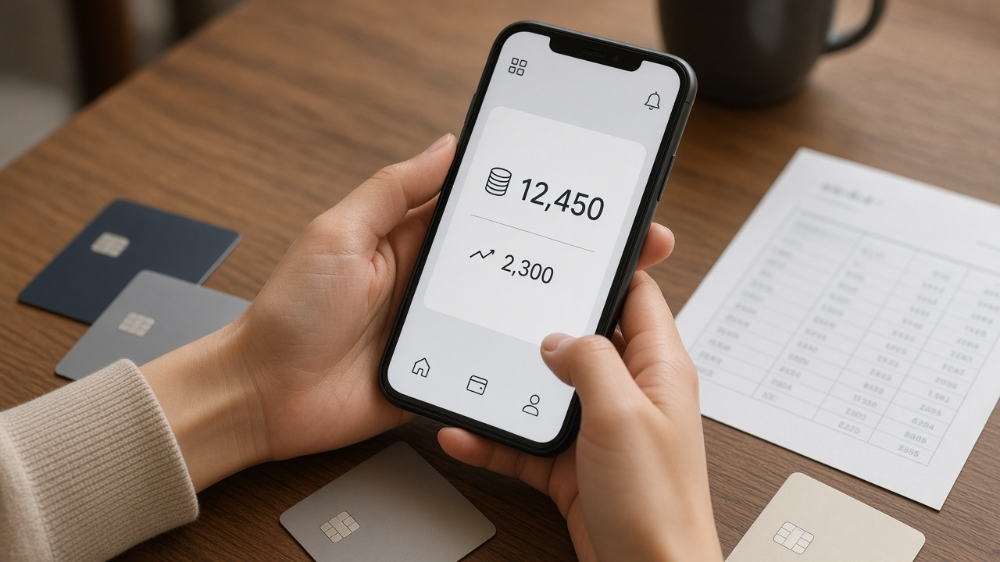
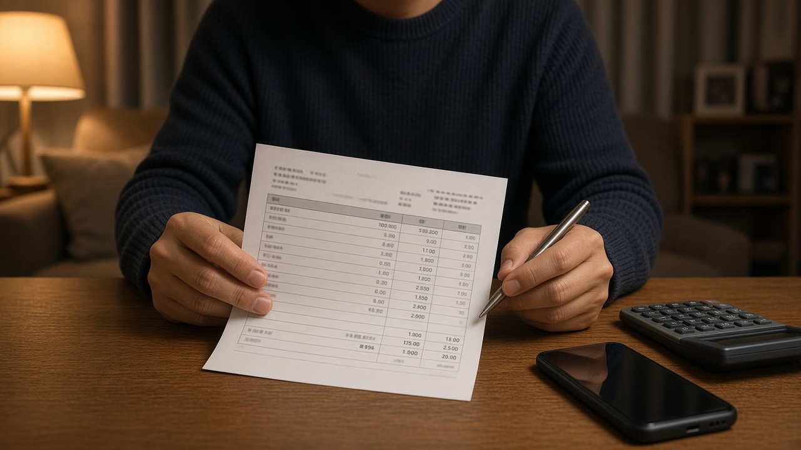

잠자는 카드포인트 2.1조 원, 2027년 5월부터 지역화폐로 전환 신청하면 다음 날부터 쓴다

지갑에 카드가 서너 장씩 있으면 포인트가 얼마나 쌓였는지 모르고 지나가는 경우가 많죠.
카드 명세서 귀퉁이에 소멸 예정 포인트가 적혀 있어도, 몇천 원이라 그냥 넘기기 쉬워요.
그런데 11월 13일 정부가 이렇게 쌓여 있는 신용카드 포인트를 지역화폐로 바꿔 쓸 수 있게 하겠다는 방안을 내놨어요.
언제부터, 어디서, 어떻게 바꾸는지, 그리고 그전까지는 포인트를 어떻게 챙기면 되는지 차례로 정리해 볼게요.
카드포인트를 지역화폐로 바꾸는 서비스, 2027년 5월에 열려요
정부는 11월 13일 국무총리 주재 제17회 국가정책조정회의에서 미사용 포인트 지역화폐 전환 추진방안을 보고했어요.
국무조정실을 중심으로 행정안전부, 금융위원회, 금융결제원이 함께 마련한 방안이에요.
첫 대상은 신용카드 적립 포인트예요. 정부가 파악한 누적 잔액이 2.1조 원에 이르고, 이미 현금으로 바꾸는 체계가 갖춰져 있어서 가장 먼저 시작하기로 했어요.
서비스 개통 시점은 2027년 5월이에요. 지금 당장 되는 것이 아니라 내년 봄 이후부터라는 점을 먼저 기억해 두세요.
바꾼 지역화폐는 해당 지역화폐 가맹점, 그러니까 전통시장이나 동네 가게 같은 곳에서 쓰는 구조예요.
어카운트인포나 지역화폐 앱에서 조회하고 원하는 만큼만 바꿔요
서비스가 열리면 금융결제원의 어카운트인포 또는 내가 쓰는 지역화폐 앱에서 갖고 있는 카드들의 포인트를 한꺼번에 조회할 수 있어요.
그다음 원하는 금액만큼만 전환을 신청하면 되고, 신청한 다음 날부터 바로 쓸 수 있다고 안내됐어요.
전부 바꿔야 하는 것이 아니라 필요한 만큼만 고르는 방식이라, 나머지는 지금처럼 현금으로 받거나 결제에 써도 돼요.
정부는 어카운트인포를 중간 연결 창구로 삼아 여러 카드사와 지역화폐 운영대행사의 전산을 이어 붙일 계획이에요.
그동안 일부 카드사가 포인트를 지역화폐로 바꿔 주는 서비스를 따로 운영하긴 했지만, 쓸 수 있는 지역이 한정돼 있었다는 보도가 있었어요. 이번에는 카드사별로 흩어진 통로를 하나로 묶는다는 점이 달라요.
다만 바꿀 때 추가 혜택을 줄지는 아직 정해지지 않았어요. 행정안전부가 인센티브를 예산과 연계해 검토 중이라는 보도가 있으니, 구체적인 조건은 개통 전에 나오는 안내를 확인하는 것이 좋아요.
내년 5월까지 기다릴 필요는 없어요, 지금도 현금으로 받을 수 있어요
지역화폐 전환은 새로운 선택지가 하나 더 생기는 것이고, 포인트를 현금으로 받는 길은 이미 열려 있어요.
2021년 1월 5일부터 금융결제원 어카운트인포 앱과 여신금융협회 카드포인트 통합조회 홈페이지 cardpoint.or.kr 에서 여러 카드사 포인트를 한 번에 조회하고 본인 명의 계좌로 입금받을 수 있게 됐어요.
1포인트를 1원으로 계산하고, 1포인트부터 입금 신청이 가능해요.
현금으로 바꿀 수 있는 것은 카드사마다 정해 둔 대표 포인트예요. 특정 제휴 가맹점에서만 쓰는 제휴 포인트는 바로 현금화되지 않아서, 카드사 앱에서 대표 포인트로 먼저 옮겨야 하는 경우가 있어요.
금융위원회 안내로는 금융권 인증서가 있으면 어카운트인포 앱이, 그렇지 않으면 여신금융협회 통합조회 서비스가 편해요.
입금은 대개 신청하면 바로 되지만, 카드사나 신청 시간에 따라 다음 영업일에 들어오기도 해요.

포인트는 5년이 지나면 사라지고, 소멸 6개월 전부터 알려 줘요
카드포인트의 유효기간은 보통 적립일로부터 5년이에요. 상사채권 소멸시효를 고려해 카드 회원 약관에서 이렇게 정하고 있어요.
신용카드 개인회원 표준약관에 따라 카드사는 소멸 예정 포인트와 소멸 시기를 6개월 전부터 매달 이용대금명세서 등으로 알려 줘야 해요.
카드를 해지해도 남은 포인트는 유효기간 동안 유지되는 것이 원칙이에요. 다만 개인정보 삭제까지 요청하면 포인트가 함께 사라질 수 있으니, 해지 전에 먼저 쓰거나 현금으로 받아 두세요.
금융감독원이 올해 국회에 낸 자료를 보면 2021년부터 지난해까지 5년간 8개 전업 카드사에서 유효기간 만료 등으로 사라진 포인트가 5천억 원이 넘는다는 보도가 있었어요.
그만큼 모르고 지나가는 포인트가 많다는 뜻이라, 명세서의 소멸 예정 항목은 한 번씩 챙겨 볼 만해요.
포인트 준다며 수수료나 카드 정보를 묻는 연락은 사기를 의심하세요
포인트를 현금이나 지역화폐로 바꿔 준다는 소식이 나오면 이를 미끼로 한 연락도 함께 늘어날 수 있어요.
금융위원회는 카드포인트 입금을 명목으로 수수료를 요구하거나 카드 비밀번호, 카드 뒷면 보안코드를 묻는 경우 보이스피싱일 가능성이 있다고 안내한 적이 있어요.
포인트 조회와 전환은 내가 직접 어카운트인포, 여신금융협회 통합조회, 카드사 공식 앱에 들어가서 하면 되고, 문자로 온 인터넷 주소를 눌러야 하는 절차가 아니에요.
의심스러운 전화나 문자를 받았다면 끊고 금융감독원 1332나 경찰 112로 확인해 보세요.
정리하면, 지금은 현금으로 받을 수 있고, 2027년 5월부터는 지역화폐로 바꾸는 선택지가 더해지며, 어느 쪽이든 공식 창구에서 직접 하는 것이 가장 안전해요.
참고 자료 금융위원회 2026년 11월 13일 보도자료 잠자고 있는 포인트 지역화폐로 바꿔 골목상권에서 쓴다, 금융위원회 2021년 카드포인트 통합조회 계좌이체 서비스 출시 보도자료, 법제처 찾기쉬운 생활법령 신용카드 혜택과 활용, 파이낸셜뉴스와 매일경제 2026년 11월 13일 보도 www.fsc.go.kr
태그 카드포인트 지역화폐 카드포인트현금화 어카운트인포 카드포인트통합조회 포인트소멸 미사용포인트 골목상권 신용카드 보이스피싱주의